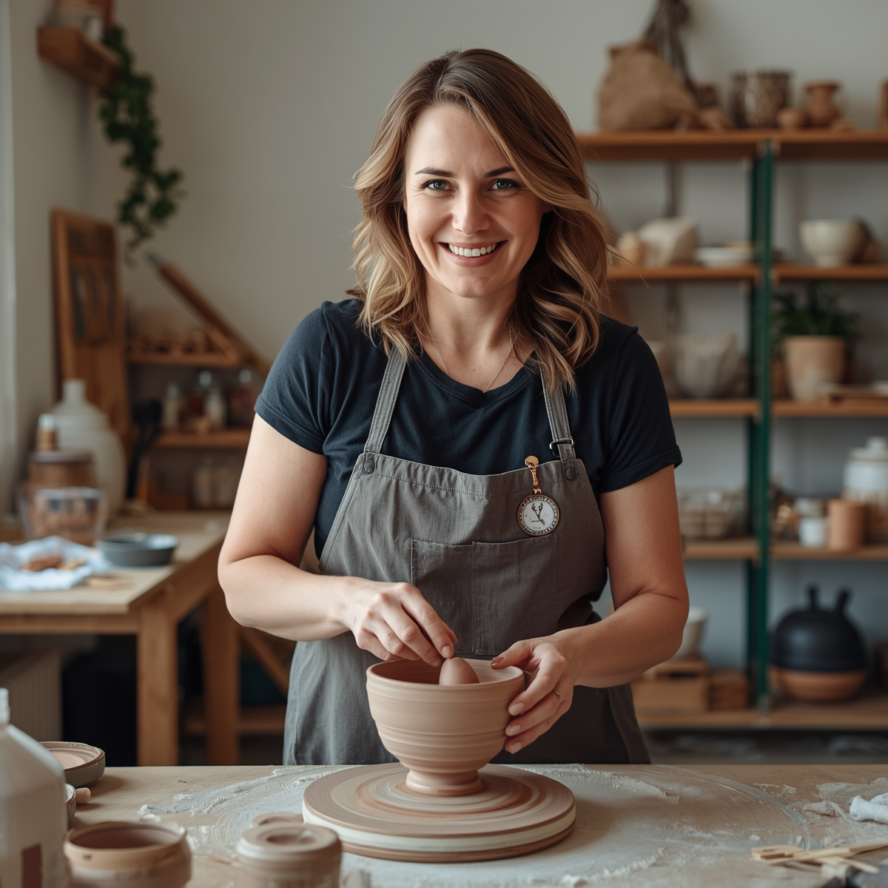
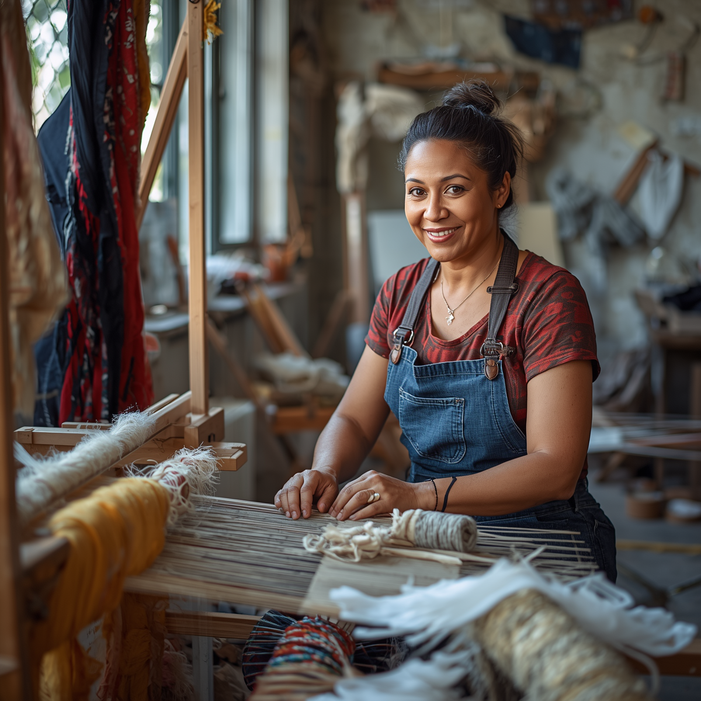
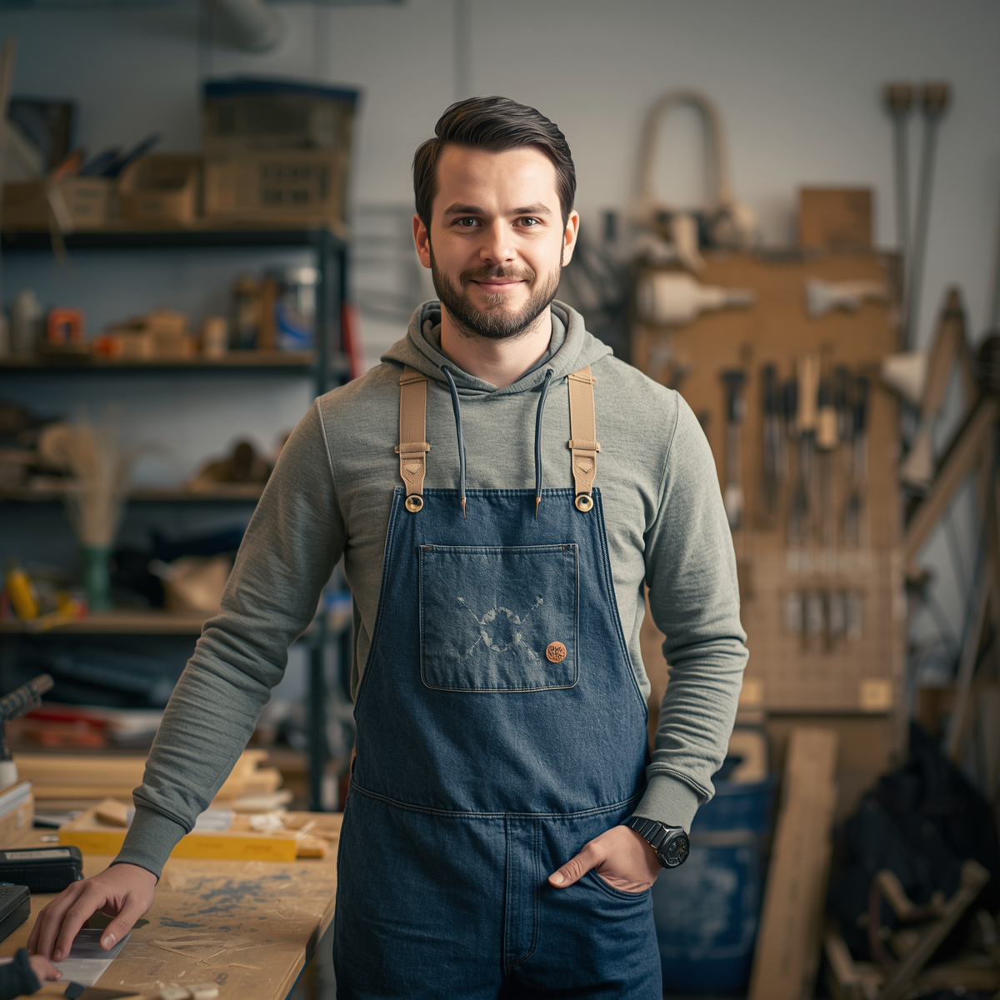
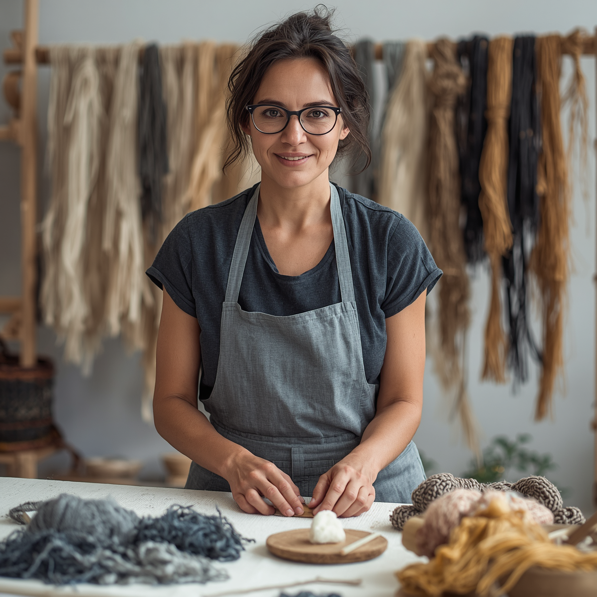
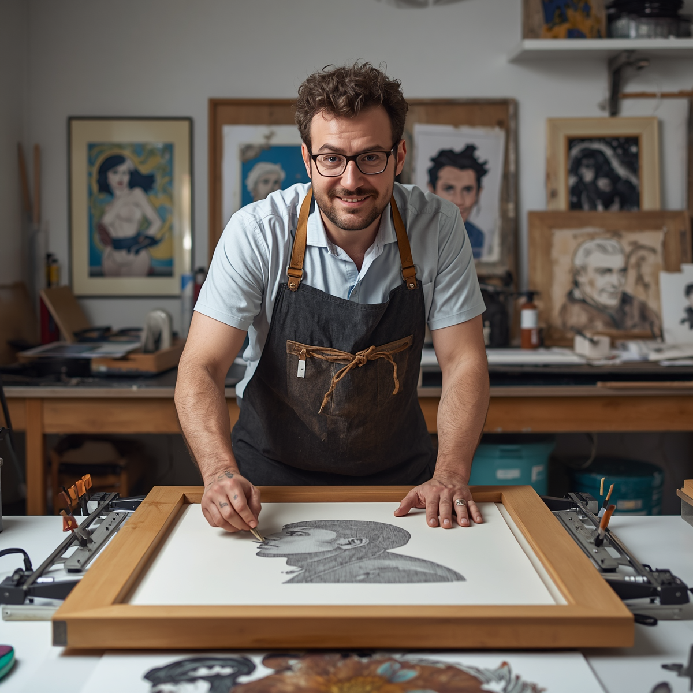

Conoce a los creadores
Una selección de profesionales del diseño textil, la cerámica y la artesanía digital que compartirán su proceso y experiencia.
Una selección de profesionales del diseño textil, la cerámica y la artesanía digital que compartirán su proceso y experiencia.

Ceramista y educadora
Explora la cerámica contemporánea con técnicas de esmaltes naturales y talleres participativos.

Tejedora urbana
Presenta nuevas fibras bio y la construcción de piezas funcionales desde el reciclaje creativo.

Diseñador de producto
Habla sobre co-creación y técnicas de producción local con impacto social.
Artesana digital
Combina procesos analógicos y digitales, con joyería generativa y prototipos artesanales.

Textil experimental
Investiga nuevas sensaciones táctiles usando fibras recicladas y procesos artesanales.

Ilustrador y artesano
Combina ilustración, serigrafía y piezas de edición limitada con un enfoque artesanal moderno.